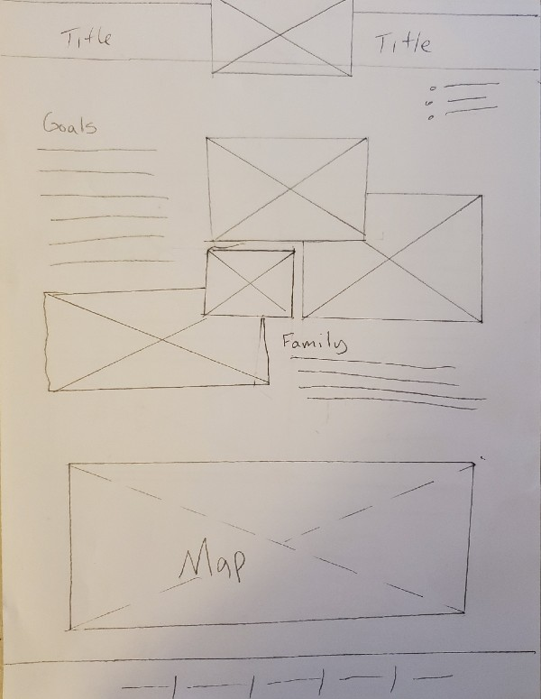
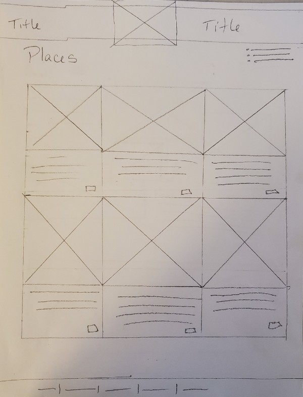
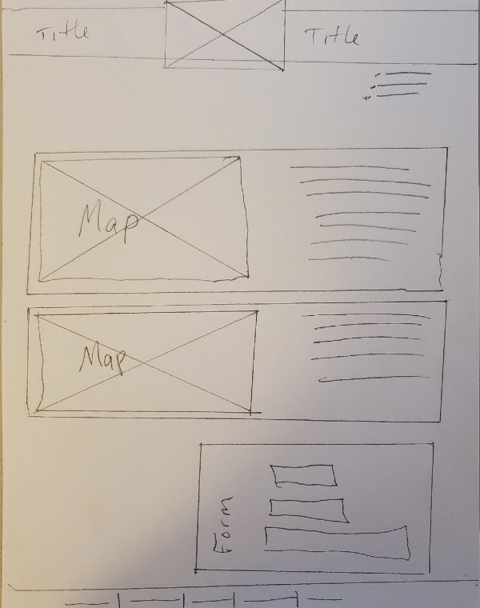

Overview
Purpose
To inform people about our trip and plans to visit all 50 states
Audience
Family, friends, and people looking to plan their own trip
Style Guide
Color Palette
Palette URL: https://coolors.co/396e94-4c4b63-e8e7ff-949396-142634
| Primary | Accent 1 | Accent 2 | Accent 3 | Accent 3 |
|---|---|---|---|---|
| [#396e94] | [#4c4b63] | [#e8e7ff] | [#949396] | [#0142634] |
Typography
Heading Font: Rancherss
Ranchers is a relaxed and whimsical interpretations of sans serif type, typical of the 1950s. It's great for fun headlines.
Paragraph Font: Roboto
Open Sans is a humanist sans serif typeface. Open Sans was designed with a neutral, yet friendly appearance. It was optimized for print, web, and mobile interfaces, and has excellent legibility characteristics in its letterforms.
Normal paragraph example
Our brief stop in North Dakota was an unexpected highlight as we visited the antique car museum and icecream parlor in Little, ND. We spent some time visiting with the owner/ hobbiest. He was gave us some mugs with famous rodeo folk as a parting gift.
Colored paragraph example
Make sure you visit the prehistoric gardens as you drive along the Oregon Coast.
Navigation
Wireframes


